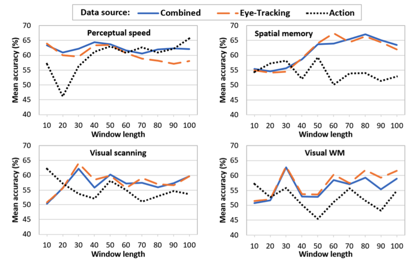

Personalized Explainable AI
Existing research on Explainable AI (XAI) suggests that having AI systems explain their inner workings to their end users can help foster transparency, interpretability, and trust. However, results also suggest that such explanations are not always wanted by or beneficial for all users. This project aims to understand when it is useful to enable AI systems to provide explanations that justify their behavior, and how this may depend on factors such as context, task criticality, and user differences (e.g., expertise, personality, cognitive abilities, and transient states like confusion or cognitive load). We already have evidence that user personality traits such as need for cognition, and openness impact how users interact with and benefit from explanations provided by a music recommender system and an ITS, supporting the vision of a personalized XAI endowing AI agents with the ability to understand to whom, when, and how to provide explanations.
Toward personalized XAI for Intelligent Tutoring System
Personalized explanations for a music recommender system
Using Eye-Tracking Data in User Modeling
Off-line analysis of eye-tracking data has been commonly used to evaluate user interfaces in HCI and to understand cognitive and perceptual processes in Psychology. We investigate how to leverage eye-tracking data to train machine learning (ML) models that an AI-driven interactive system can utilize to predict in real-time specific traits and states of its users during interaction (user modeling), and personalized its responses and behaviors accordingly. Our results so far have shown that eye-tracking data can be used for real-time prediction of user traits and states relevant for AI-driven personalization in a variety of context, including: user perceptual abilities and skills relevant for devising the user-adaptive visualizations; user's learning with Intelligent Tutoring Systems, early onset of Alzheimer, user affective states such as individual emotions, emotion valence, and confusion.
Prediction of user properties for user-adaptive visualizations
Prediction of users learning with Intelligent Tutoring System

Detection of user-affective states using eye-tracking
User-Adaptive Information Visualization
Information visualization is becoming increasingly important with the explosion of applications that allow users to access a large amount of data in many aspects of their lives. Most research in information visualization seeks to devise optimal visualizations given the type of data and tasks to be supported. There is, however, preliminary evidence in perceptual psychology that visualization effectiveness may depend on users' specific characteristics (e.g., preferences, abilities, and mental states), calling for the need of user-adaptive information visualization. Our results show that cognitive abilities such as perceptual speed, visual and verbal working memory can impact user experience with well-known bar-graph-based visualization, more complex visualizations and visualizations embedded in narrative text. Our results also provided insights on how personalization should be provided. We have shown that providing real-rime support to guide user attention during visualization processing can improve user performance, the first result of this nature in the literature.
Impact of congnitive abilites on user experience with visualizations

AI-driven Personalization in Exploratory Learning Environments
There is extensive evidence that AI-based educational technology can effectively provide personalized support to help students learn problem-solving skills in various domains. In recent years there has also been increasing interest in AI-based environments to support educational activities that are more exploratory in nature. The capability to explore effectively is relevant to many tasks involving interactive systems (e.g., learning from MOOCS, working with an interactive simulation, exploring data with tools for visual analytics, and researching a topic online). However, not all learners possess the meta-cognitive skills (e.g., reasoning and study processes) to learn effectively from these environments. This project investigates AI-based tools that can provide personalized support to users who are having difficulties with exploratory learning environments, including interactive simulations, an environment to support the acquisition of computational thinking skills via game design and MOOCs.